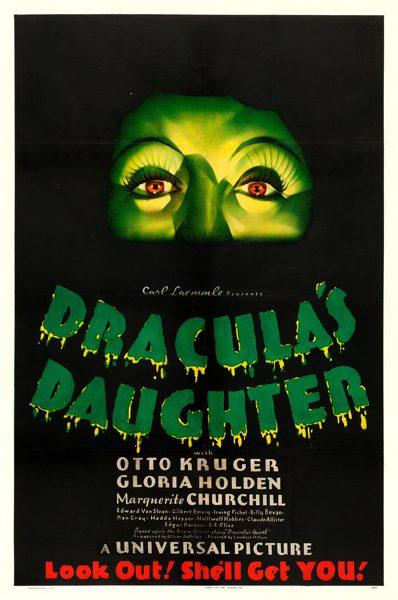

THE STANFORD THEATRE
Now Showing
·
Upcoming
·
Past
·
Search
October 12 - November 26, 2023
Universal Pictures: Horror and More
14 bills
October 12 - 13
Werewolf of London (1935)
75 min
Tower of London (1939)
92 min
October 14 - 15
Frankenstein (1931)
71 min
Bride of Frankenstein (1935)
78 min
October 19 - 20
The Wolf Man (1941)
70 min
The Scarlet Claw (1944)
74 min
October 21 - 22
Dracula (1931)
75 min

Dracula's Daughter (1936)
71 min
October 26 - 27
Abbott and Costello Meet Frankenstein (1948)
83 min
The Mummy's Hand (1940)
67 min
October 28 - 29
The Black Cat (1934)
65 min
The Mummy (1932)
73 min
November 2 - 3
Back Street (1941)
89 min
Counsellor at Law (1933)
82 min
November 4 - 5
My Man Godfrey (1936)
94 min
Only Yesterday (1933)
105 min
November 9 - 10
Waterloo Bridge (1931)
81 min
Imitation of Life (1934)
111 min
November 11 - 12
Destry Rides Again (1939)
94 min
The Bank Dick (1940)
72 min
November 16 - 17
Saboteur (1942)
108 min
The Suspect (1944)
85 min
November 18 - 19
Scarlet Street (1945)
103 min
Phantom Lady (1944)
87 min
November 23 - 24
One Hundred Men and a Girl (1937)
84 min
Mad About Music (1938)
98 min
November 25 - 26
Show Boat (1936)
115 min
One More River (1934)
88 min